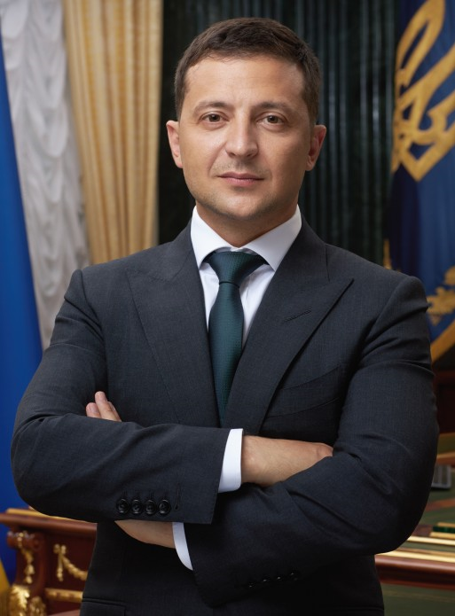

Володимир Олександрович Зеленський
Народився
Народився 25 січня 1978 року в місті Кривий Ріг Дніпропетровської області.
Громадянин України. Проживає в Україні, зокрема протягом останніх десяти років до дня виборів.
Освіта
Освіта вища. У 1995-2000 рр. навчався у Київському національному економічному університеті за спеціальністю «Правознавство», здобув кваліфікацію юриста.
Творчість
- 1997-2003 рр. – актор, сценарист, художній керівник команди Клубу веселих і кмітливих «Квартал 95».
- 2003-2011 рр. – художній керівник у товаристві з обмеженою відповідальністю «Студія «Квартал 95».
- 2011-2012 рр. – генеральний продюсер у приватному акціонерному товаристві «Телеканал «Інтер»
- 2013-2019 рр. – художній керівник у товаристві з обмеженою відповідальністю «Студія «Квартал 95»
- Засновник ГО «Молодіжний центр «Ліга сміху». На виборних посадах не перебував.
У творчому доробку має 11 повнометражних ігрових фільмів:
- 2009 — «Кохання у великому місті»
- 2010 — «Кохання у великому місті 2»
- 2011 — «Службовий роман. Наш час»
- 2012 — «Я буду поруч»
- 2012 — «8 перших побачень»
- 2012 — «Ржевський проти Наполеона»
- 2014 — «Кохання у великому місті 3»
- 2015 — «8 нових побачень»
- 2016 — «8 кращих побачень»
- 2016 — «Слуга народу 2 (фільм)»
- 2018 — «Я, ти, він, вона»
Володар понад 30 нагород Національної телевізійної премії України «Телетріумф». Є також володарем премій і лауреатом багатьох міжнародних кіно-, телефестивалів і медіафорумів.
Зіграв головну роль у серіалі «Слуга народу», який став лауреатом міжнародної кінопремії WorldFest Remi Award (США, 2016) та потрапив до четвірки фіналістів у категорії комедійних фільмів на Seoul International Drama Awards (Південна Корея). Також «Слуга народу» був удостоєний нагороди Intermedia Globe SILVER у категорії «Розважальні телевізійні серіали» на міжнародному фестивалі медіаконтенту WorldMediaFestival у Гамбурзі (Німеччина).
Від самого початку бойових дій на Донбасі разом зі студією «Квартал 95» допомагав армії. Актори передавали бійцям кошти, техніку, відвідували з концертами передову та різні військові частини.
Сімейний стан
Одружений. Дружина – Олена Володимирівна Зеленська. Має дочку Олександру та сина Кирила